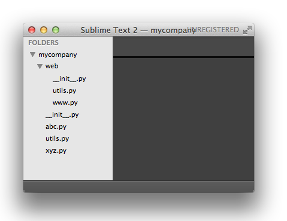

Python基础-语法
这篇文章是对廖雪峰老师的python 3教程中python语法的笔记。廖雪峰老师的python基础教程不仅细致的讲解了python的语法、还点出了语法中的注意点、python常用的模块、python的面向对象和函数式编程以及一些周边。对廖雪峰老师的python基础教程分为四部分。一、语法；二、面向对象和函数式；三、语言机制关系密切的模块；四、常用模块。
基本语法
- 一般使用4个空格作为缩进
- 使用#作为注释
- r’’表示’’内部的字符串默认不转义
- 使用’’’…’’’格式表示多行内容,还可以在前面加r表示不转义
- 逻辑运算and,or,not
- 空值None,空值不是0
- 变量名必须是大小写英文、数字和_的组合
- //地板除,两个整数的地板除仍然是整数;/两个整数相处时浮点数
字符串
- 在计算机内存中，统一使用Unicode编码，当需要保存到硬盘或者需要传输的时候，就转换为UTF-8编码。
- \uxxxx表示对应的unicode编码的字符
- 无法显示为ASCII字符的字节，用\x##显示
- 将字符串变为bytes,x = b’ABC’ 等效于x = ‘ABC’.encode(‘ascii’);只能用在ascii码方位的字符
- 函数就计算字节数,如果是list则返回元素个数
- 常用函数
- int()转换字符串为整形
- len()函数计算的是str的字符数，如果换成bytes，len()
- str.encode(‘utf-8’)转换编码为utf-8类型
- str.decode(‘utf-8’)解码
- ord()函数用于获取字符的整数表示,chr()函数把编码转换为对应的字符
- 在开头加上以下两行注释使Python解释器按UTF-8解析源代码
- 第一行告诉linux/os x系统这是一个可执行程序
- 第二行告诉python解释器,按照utf-8读取源代码
1 | #!/usr/bin/env python3 |
- python格式化字符串(%s永远起作用，它会把任何数据类型转换为字符串,用%%来表示一个%)
1 | 'Hello, %s' % 'world' |
list和tuple
- list
- 可以使用负数从后往前获取list的元素,超出元素的范围也会越界
- 常用函数:
- append()追加元素到list末尾
- insert(1,’Jack’)
- pop(i)删除i位置的元素,pop()删除最后一个元素
- tuple(不能改变的list,更加安全)
1 | #表示只有一个元素,使用,来消除歧义 |
条件判断
- if语句
1 | if <条件判断1>: |
可以使用这种形式的条件判断0 <= score <= 100
循环
- for…in循环,把list或tuple中的每个元素迭代出来
1 | sum = 0 |
- range(i)生成一个0-i的整数序列
- while循环,只要条件满足,就不断循环,条件不满足时退出循环。
1 | sum = 0 |
使用dict和set
- dict的key必须是不可变对象
1 | d = {'Michael' : 98,'Bob' : 75,'Tracy' : 85}; |
- set
1 | s = set([1,2,3]); |
函数
- 函数名就是指向该函数的一个变量
- 默认参数一定要用不可变对象，如果是可变对象，程序运行时会有逻辑错误！
- 定义函数
1 | def my_abs(x): |
- 默认参数陷阱
1 | def add_end(L=[]): |
- 尾递归优化
- 在函数返回的时候调用自身本身
- 并且return语句不能包含表达式
高级特性
切片操作
- 可以使用在在list,tuple或字符串上
1 | L = ['Miichael','Tony','Tom'] |
迭代
- 迭代所有可迭代的对象(包括字符串,dict)
1 | d = {'a' : 1 , 'b' : 2 , 'c' : 3}; |
- 判断可迭代对象的方法
1 | from collections import Iterable |
列表生成式
1 | for x in range(1,11): |
生成器
- 在循环的过程中不断推算出后续的元素,这样就不必创建完整的list，从而节省大量的空间。这种一边循环一边计算的机制，称为生成器：generator
- 生成器创建
1 | #1.列表生成式改为() |
- 可以被for循环调用的被称为Iterable可迭代对象
- 可以使用next()函数调用的是Iterator对象
- 将list、dict、str等Iterable变成Iterator对象可以使用iter()函数
- Iterator对象表示的是一个数据流，Iterator对象可以被next()函数调用并不断返回下一个数据，直到没有数据时抛出StopIteration错误。可以把这个数据流看做是一个有序序列，但我们却不能提前知道序列的长度，只能不断通过next()函数实现按需计算下一个数据，所以Iterator的计算是惰性的，只有在需要返回下一个数据时它才会计算。
模块
- python使用包结构管理模块,每一个包中必须有一个
__init__.py文件代表整个包模块 - 自己创建的模块名不能和Python自带的模块名起冲突

- 文件www.py的模块名就是mycompany.web.www，两个文件utils.py的模块名分别是mycompany.utils和mycompany.web.utils。
- 使用模块
1 | #!/usr/bin/env python3 |
- 模块搜索路径
1 | import sys |
- 设置环境变量PYTHONPATH，该环境变量的内容会被自动添加到模块搜索路径中。设置方式与设置Path环境变量类似。注意只需要添加你自己的搜索路径，Python自己本身的搜索路径不受影响。
- 通过前缀_实现变量的私有,类似
_xxx和__xxx这样的函数或变量就是非公开的（private），不应该被直接引用，比如_abc，__abc等。这只是人为的约定，并非内部机制实现
错误处理
错误处理中除了本身的语法与java错误处理不同外，还多加了一个else分支，用于在错误未发生 时运行。
1 | try: |
抛出错误，使用raise
1 | # err_raise.py |